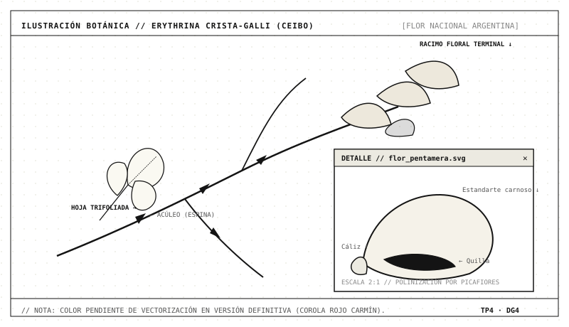

Capítulo 3 · Especies destacadas
Ceibo
El ceibo (Erythrina crista-galli) crece en las riberas y zonas húmedas del litoral. Su flor roja fue declarada flor nacional en 1942.

Es un árbol de tamaño mediano, de tronco tortuoso y ramas con pequeñas espinas. Florece desde la primavera hasta el verano, y sus flores atraen a aves como los picaflores. Por su tolerancia a los suelos húmedos, se lo utiliza en plazas, parques y costaneras.
Lapacho rosado
Árbol del noreste y noroeste del país, muy valorado por su floración rosada de fines del invierno, que ocurre antes de que broten las hojas.
Puede superar los veinte metros de altura en su ambiente natural, aunque en la ciudad suele ser más bajo. Su floración lo convierte en una de las especies nativas más reconocibles y más elegidas para el arbolado ornamental.
Algarrobo
Árbol de las zonas secas del centro y norte. Sus frutos fueron históricamente un alimento importante para los pueblos originarios.
Su resistencia a la sequía lo vuelve interesante para ciudades con veranos calurosos y poca disponibilidad de agua. Además, su madera y sus frutos tienen un valor cultural que excede lo paisajístico.
Nota: las imágenes de cada especie se agregarán en la próxima iteración (carpeta
img/).